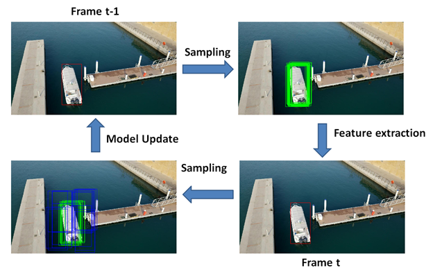

Online Model Adaptation for UAV Tracking with Convolutional Neural Network
| Zhuojin Sun YUNEEC Aviation Technology, Yong Wang, Robert Laganiere University of Ottawa Ottawa, ON, Canada |
|
|---|---|
| Questions? Drop us a line | |
Overview
Unmanned aerial vehicle (UAV) tracking is a challenging problem and a core component of UAV applications. CNNs have shown impressive performance in computer vision applications, such as object detection, image classification and so on. In this work, a locally connected layer is employed in a CNN architecture to extract robust features. We also utilize focal loss function to focus training on hard examples. Our CNN is first pre-trained offline to learn robust features. The training data is classified according to the texture, color, size of the target and the background information properties. In a subsequent online tracking phase, this CNN is fine-tuned to adapt to the appearance changes of the tracked target. We applied this approach to the problem of UAV tracking and performed extensive experimental results on large scale benchmark datasets. Results obtained show that the proposed method performs favorably against the state-of-the-art trackers in terms of accuracy, robustness and efficiency.
Our work was accepted to the 15th Conference on Computer and Robot Vision (CRV'18)
Algorithm Overview
In our pre-training stage, a deep network is trained to learn features for separating foreground object from background. Our network has independent branches of class specific layers and shares the common information learned from all training data in the preceding layers. Each class in our network is trained independently and iteratively while the shared layers are updated at each iteration. Class independent information is thus captured and generic object representations are learned for visual tracking.
Once the pre-training is completed, we fine-tune the new network during an online tracking phase. Figure 1 demonstrates the pipeline of our tracking method. Samples (green rectangles) are gathered around the target position (red rectangle) in the previous frame. Features are extracted through our CNN model and the best candidate is determined as the ones with the maximum positive scores. Next new training examples are extracted around the target location (green rectangles and blue rectangles) and model update is carried out.
